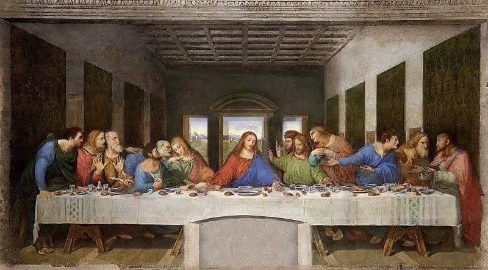
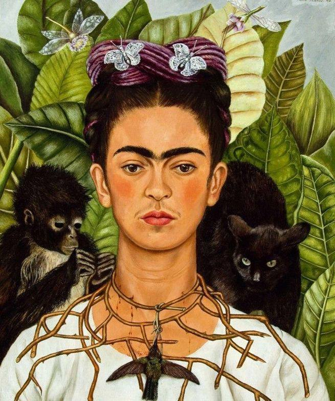
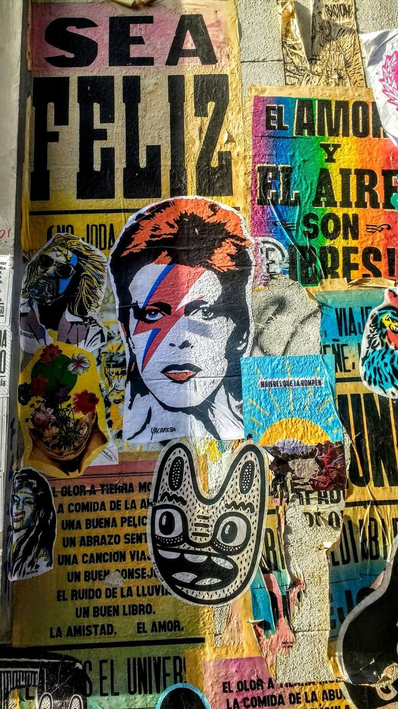

Revista Ilustrada de los Géneros Visuales

Un recorrido por las artes de la imagen
Las tipologías de géneros visuales permiten identificar y categorizar las imágenes según su función, su soporte, su estructura y el contexto en el que circulan. Esta edición las reúne todas, ficha por ficha, con láminas y notas al pie.
Leer el catálogo

Las tipologías de géneros visuales se refieren a la identificación y categorización de diferentes expresiones visuales determinadas por sus características, funciones y contexto de uso, pudiendo variar según la disciplina de estudio, el medio de comunicación o la finalidad del análisis. En el contexto de la comunicación visual, Mitchell (2005) las define como cualidades de los mensajes visuales que comparten rasgos comunes y que responden a necesidades y objetivos específicos de comunicación, siendo dicha taxonomía esencial en campos como el análisis visual, la historia del arte y la comunicación y los estudios culturales.
— Valeria Molina, redacción